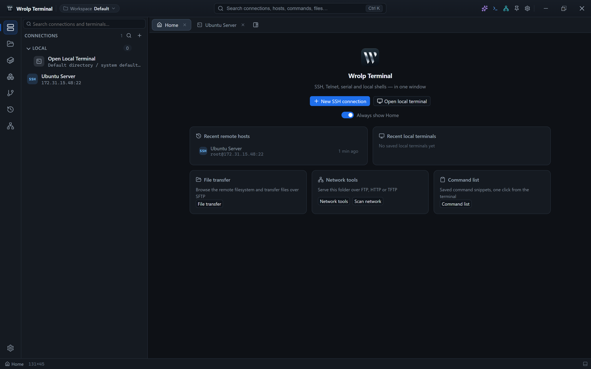

本手册对应 Wrolp Terminal v0.0.12，按功能域分章：从安装、连接、会话排布，到文件、运维面板、 AI 助手与数据管理。
如何阅读。每章先给出操作入口与步骤，再说明界面行为、默认值和限制。
命令、路径与字段名以等宽字体标出，可直接在应用中找到对应位置。

章节
建议阅读路径
- 首次安装配置：1 → 2 → 3。先安装、连接，然后了解标签页与窗格的行为。
- 日常文件操作：4 → 5 → 6。传输、编辑与端口转发。
- 服务器运维：7 → 8 → 9。Docker、Kubernetes/Helm 与 Git。
- AI 与记录留存：10 → 11 → 12。助手配置、录制与数据迁移。
- 出问题时：直接跳到 13；每个症状都会链接回相关章节。
使用须知
- 发布包仅提供 Windows MSI；Linux 与 macOS 需从源码构建。
- 连接配置与 AI 密钥加密存储，解密依赖数据目录中的
vault.key，备份时需一并保管。 - 会话录制默认关闭；开启后事件写入本机 SQLite，不上传远端。
- SSH 隧道为本地端口转发：在本机监听端口，把流量经 SSH 会话转发到远端目标。
- Docker、Kubernetes 与 Git 面板都在当前聚焦终端所在的主机上执行命令。